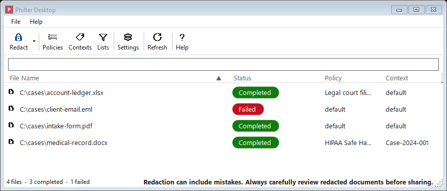

Getting Started
This page covers installing Philter Desktop, redacting your first document, and removing the program again.
What you need
- A computer running Windows 10 or Windows 11.
Philter Desktop is a per-user subscription that includes support (see Licensing & Support); with your subscription you get the official, signed installer from philterd.ai. There is no product key to type in, and every supported document type (plain text, Microsoft Word, PDF, Rich Text, spreadsheets, and email) redacts out of the box. You do not need administrator rights: Philter Desktop installs just for your own user account by default.
Installing Philter Desktop
Philter Desktop is delivered as a single setup program: one file you download and double-click.
To install:
- Download the Philter Desktop setup file. (The source is open on GitHub, so a technical user can also build their own copy; see Licensing & Support.)
- Double-click the downloaded file to start the setup wizard.
- Follow the wizard's prompts (the next section explains the choices it offers). It lets you launch Philter Desktop as soon as it finishes.
Once it is done, Philter Desktop appears in your Start menu, and on your desktop if you chose that option.
The choices the setup wizard offers
The setup wizard offers a couple of optional checkboxes; you can leave them at their defaults:
- Create a desktop icon: adds a Philter Desktop shortcut to your desktop. (Off by default.)
- Start Philter Desktop automatically when I sign in: has Philter Desktop launch quietly each time you sign in to Windows, running in the background so it can watch folders for you. Turn this on only if you plan to use the watched folders feature; otherwise leave it off. (Off by default. You can also change this later, from inside the program's Settings.)
By default the program installs only for you and does not require administrator permission. (If you are setting up a shared computer and want it available to everyone, the wizard has an option to install for all users, which does require an administrator.)
A note on Windows security warnings. The official signed installer from philterd.ai installs cleanly, with no warning. If you instead build Philter Desktop yourself from source, the resulting installer is unsigned, so Windows may show a blue "Windows protected your PC" message. This is a normal safety feature called SmartScreen that appears for software Windows hasn't seen signed by a known publisher. Click More info and then Run anyway to continue. If you have any doubt about where a file came from, stop and check with whoever provided it before going further.
Your first time opening the program
The very first time you run Philter Desktop, it shows a short welcome and license agreement screen. Read it and click I Agree to continue. Once you've agreed, it won't appear again on future launches. It also reminds you that automated redaction can miss things, so always review each cleaned-up document before sharing it.
After that, you see the main window. The top of the window has a row of buttons (a toolbar), and most of the window is taken up by the redaction queue, the list of documents you've asked it to clean up. The first time you open the program, this list is empty.

The main window: the toolbar along the top and the redaction queue filling the rest.
The toolbar buttons are:
- Redact: add one or more documents to be redacted. Click the small arrow on this button for
more ways to redact: Redact with Preview… (a live before-and-after preview before saving),
Find & Redact… (remove specific words you type in), Redact Spreadsheet… (for
.xlsxand.csvfiles), and Redact Folder… (redact every supported file in a folder). - Policies: create and edit policies (the rules for what gets removed).
- Contexts: manage contexts (consistent replacements).
- Lists: edit the global Always Redact and Always Ignore term lists that apply to every redaction, no matter which policy is used. (This is different from the per-policy lists inside the Policy Editor; see Lists that apply to every policy.)
- Settings: output location, logging, Word and PDF handling, watched folders, security, and notifications.
- Refresh: reload the queue (you can also press F5).
- Help: open this documentation.
- Support: a link (at the far right) to the Philter Desktop product page, where the official, signed build and the support subscription live (see Licensing & Support).
Philter Desktop already creates a starter policy named default (the set of rules for what to remove) and a starter context named default (which keeps replacements consistent). Because these are ready to go, you can redact a document immediately, without setting anything up first.
Redacting your first document
- Click the Redact button on the toolbar (or simply drag a document from a folder and drop it onto the window).
- Watch the document's row in the list. Its status moves from Pending (waiting its turn), to Processing (being worked on), to Completed (finished).
- When it says Completed, your cleaned-up copy is ready. Open it by right-clicking the row and choosing Open redacted file, or find it in the folder where Philter Desktop saves its output (see Settings).
The cleaned-up copy is a brand-new file. Your original document is left exactly as it was. Always open the cleaned-up copy and read through it before you send it to anyone.
Installing a newer version later
When a newer version of Philter Desktop comes out, you do not need to uninstall the old one first. Download the new Philter Desktop setup file and run it the same way; it installs over your existing copy, keeping all of your policies, contexts, settings, and history intact.
Philter Desktop can also tell you when an update is available: choose Help → Check for Updates…. If a newer version exists, it lets you know and points you to your account page to download it. It never downloads or installs anything on its own.
Uninstalling Philter Desktop
Remove Philter Desktop the same way you would remove any Windows program:
- Open the Windows Settings app and go to Apps → Installed apps (on Windows 10 this is Apps & features).
- Find Philter Desktop in the list.
- Click it (or the ⋯ menu next to it) and choose Uninstall, then confirm.
What uninstalling removes, and what it leaves behind
When you uninstall, Philter Desktop automatically removes:
- the program itself and its Start-menu (and desktop) shortcuts;
- the start-at-sign-in entry, if you had it turned on; and
- the "Redact with Philter Desktop" right-click command, if you had turned that on in Settings.
Your saved data is your choice. Near the end, the uninstaller asks:
Also remove your saved Philter Desktop data for this account?
This is your policies, contexts, settings, and redaction history (including any sensitive text the history captured), kept in a private folder under your user account.
- Choose No (the default) to keep it, so a later reinstall still has everything. This is also what happens during an upgrade or a silent/automated uninstall, so you never lose your setup by accident.
- Choose Yes to permanently delete that data for your account in one step. (You can also wipe just
the history from inside the program with File → Clear Redaction History…, or delete the folder at
%LocalAppData%\PhilterDesktop\by hand.)
The cleaned-up files you already saved are never touched, whichever choice you make: every redacted copy stays where you saved it. Uninstalling never deletes your documents.
Where to go from here
To fine-tune how Philter Desktop works:
- Learn how to control what gets removed and how it's replaced by creating and editing policies.
- Adjust settings such as where your cleaned-up files are saved and what they're named.
- Set up watched folders so that documents dropped into a particular folder are cleaned up automatically.